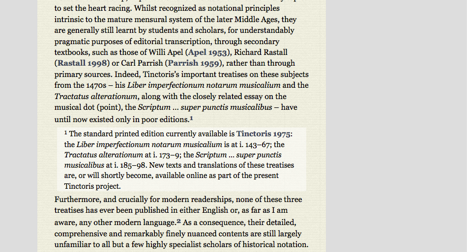

  	<div class="content">
      <div class="contentbox">
        <div class="explanation navigation">
          <div class="explanation-row">
            <div class="cell"> </div>
            <div class="cell"><a href="../#">Up (website guide)</a></div>
            <div class="cell"></div>
          </div>
          <div class="explanation-row">
            <div class="cell"><a href="../Articles/1.html">Back (articles overview)</a></div>
            <div class="cell"></div>
            <div class="cell"><!-- <a href="../3/#">Next (Multiple bibliography pop-ups)</a> --></div>
          </div>
        </div>
      <h3>Articles and other information pages: Notes</h3>
      <p>Passages that, in print would be included as footnotes or
      endnotes are provided in place, and can be expanded by clicking
      on the note number. They can be hidden again by the same method
      or by double clicking on the note itself.</p>
      <div class="helpshot h950">
        
      </div>
    <!--end .contentbox -->
  	</div>
    <!-- end .content -->
   </div>